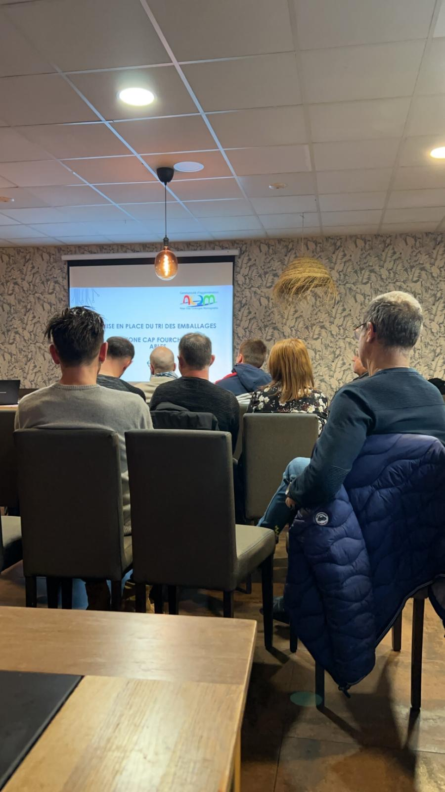
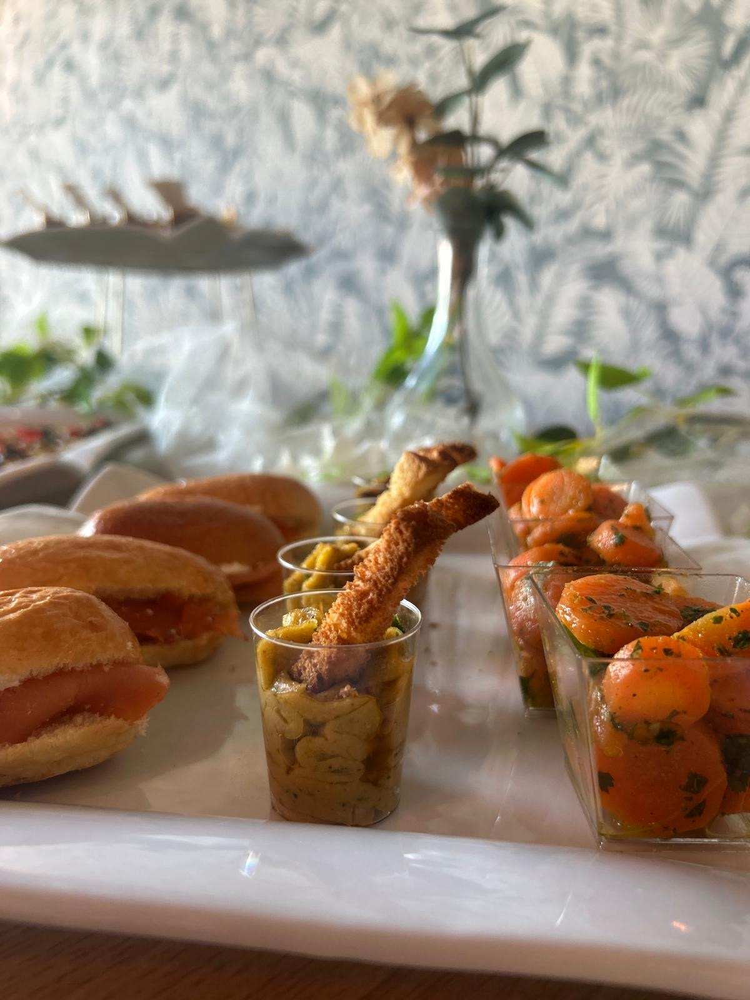
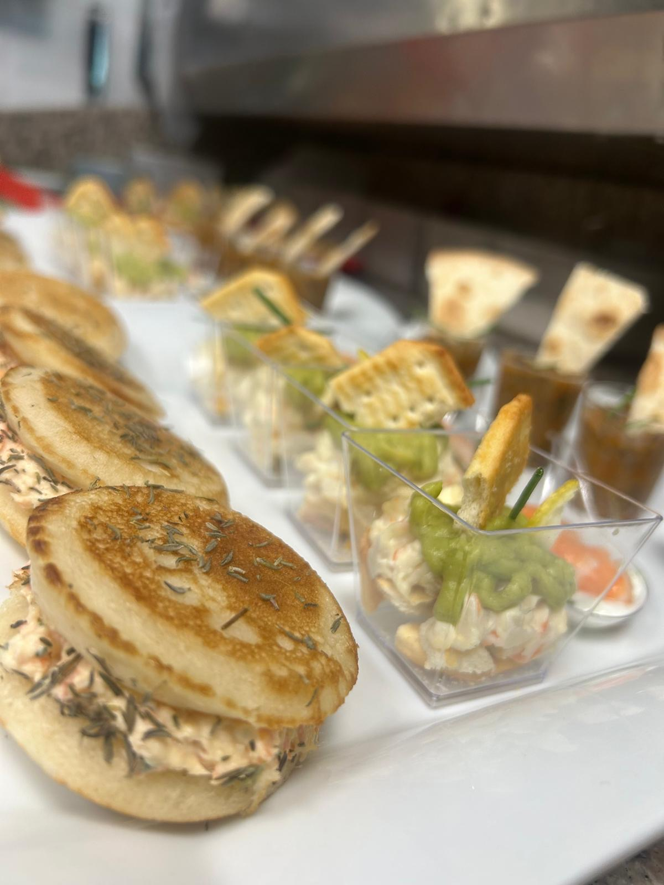
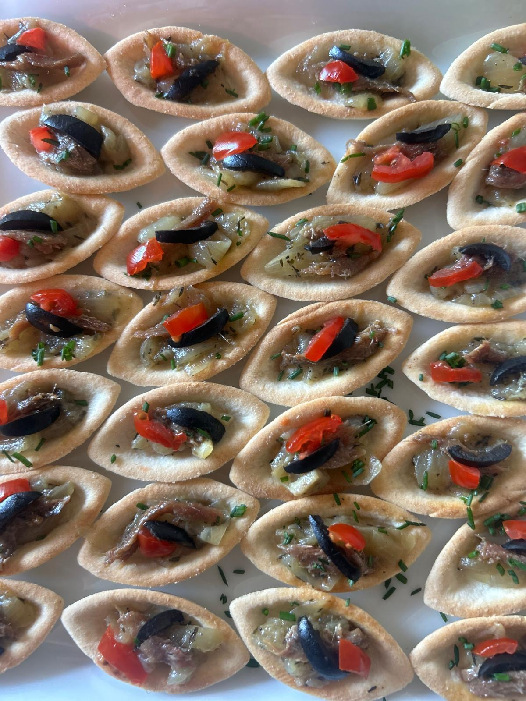
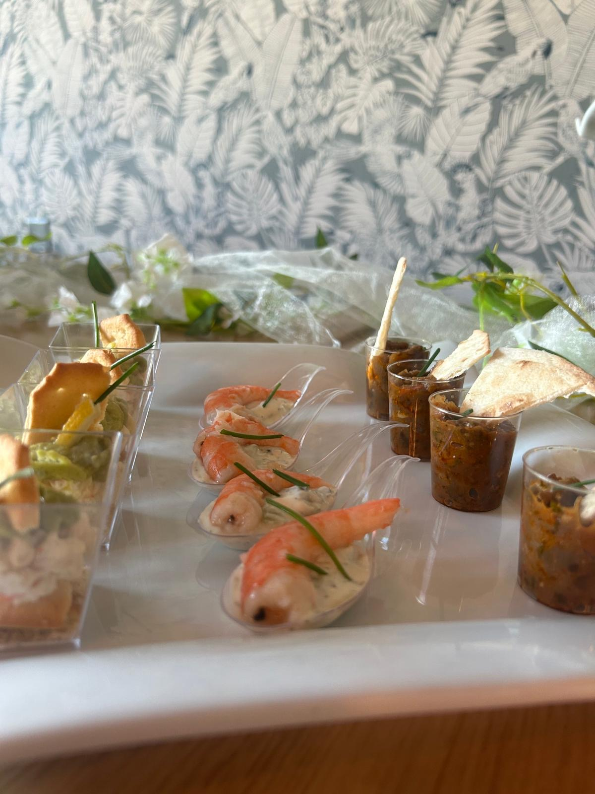
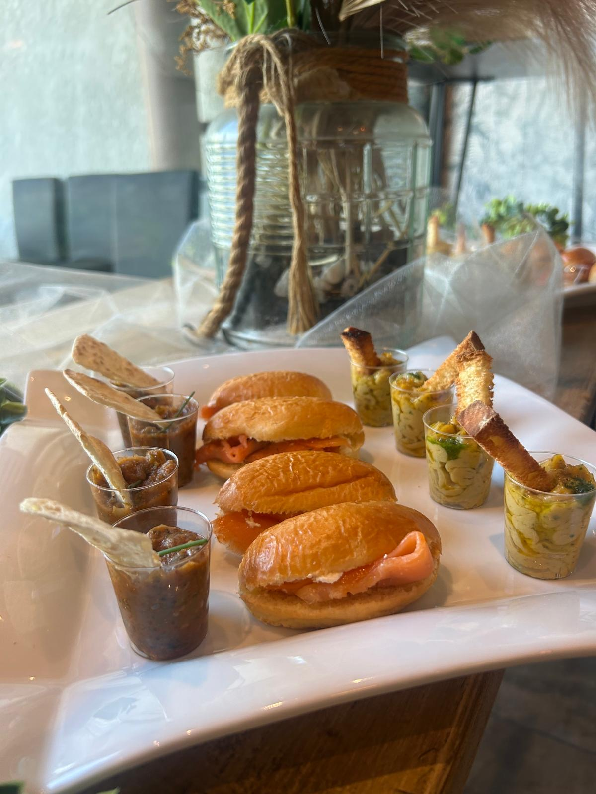
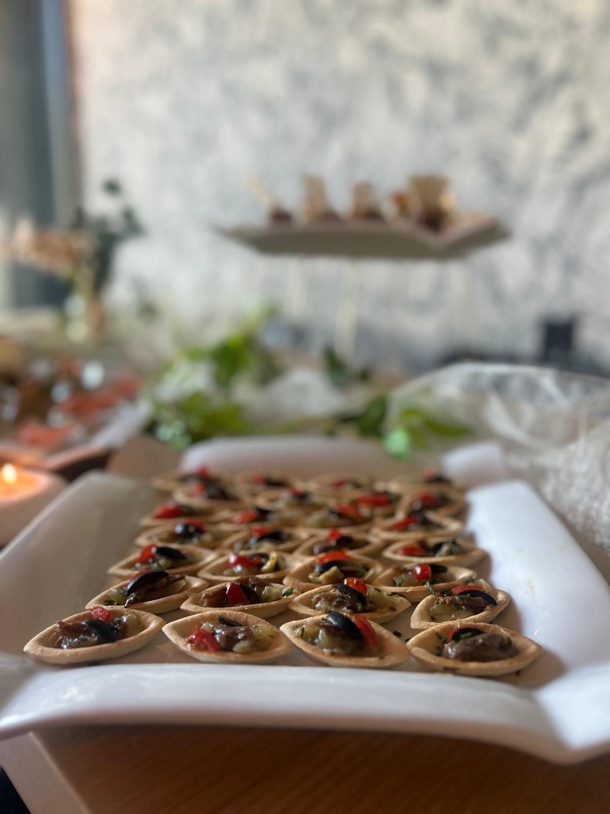
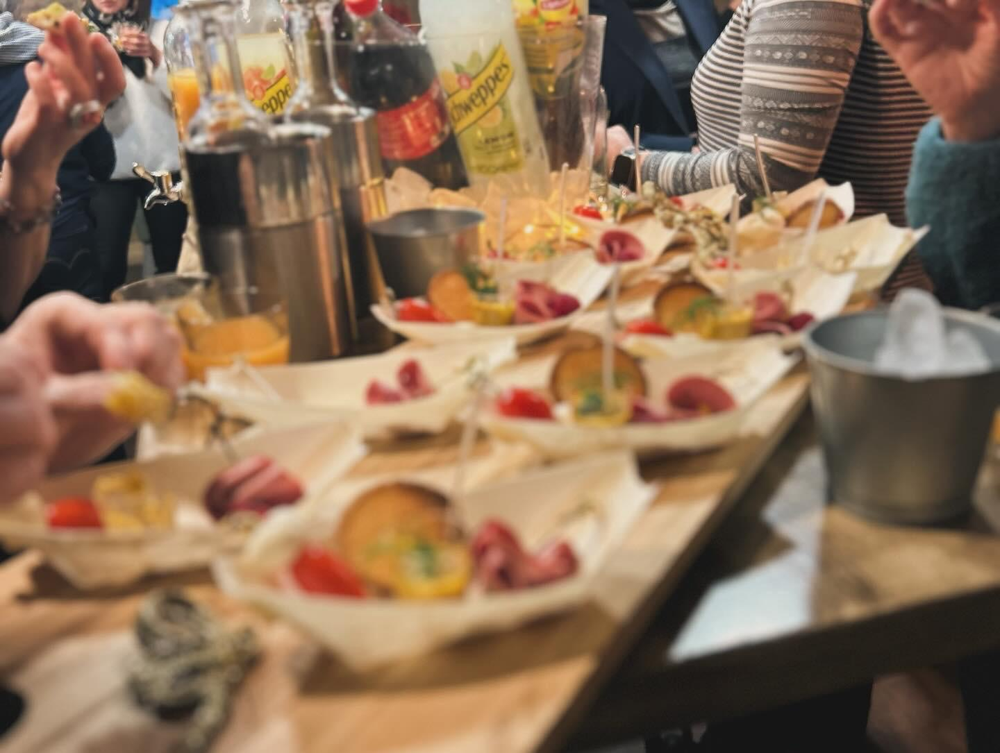
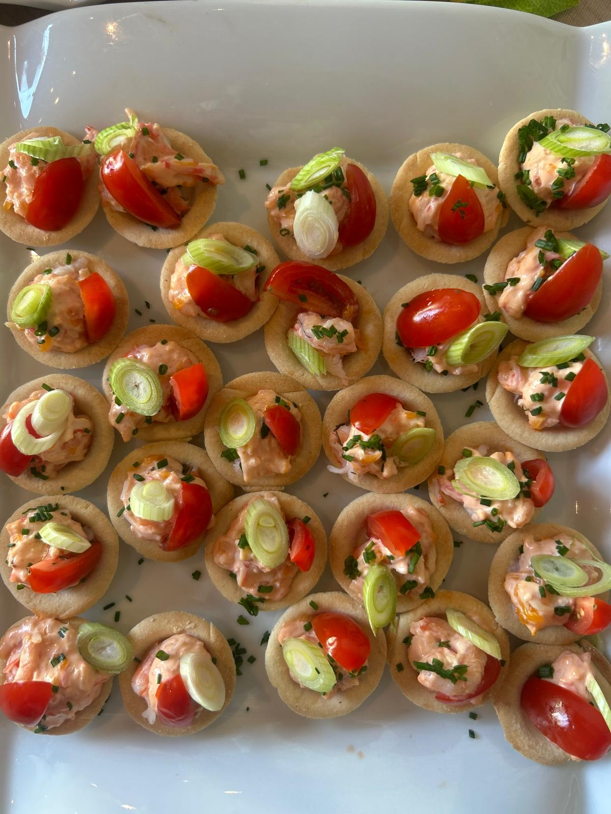

Très chouette repas : produits frais et de qualité. Nous nous sommes régalés, merci. Salle calme et agréable, WC propres !
Restaurant sur place & à emporter
b brasserie
Cuisine traditionnelle, faite maison, au cœur de la zone commerciale de Fourchon
La Maison
Une brasserie familiale, en plein cœur de Fourchon
Chez B Brasserie, on cuisine comme à la maison : des produits frais, des recettes travaillées chaque jour et un accueil chaleureux. Salades césar, burgers maison, plats traditionnels et incursions gourmandes du côté de l’Orient — la carte est pensée pour être partagée, sur place en salle ou à emporter.
Une cuisine simple, généreuse et sans détour : c’est fait maison, du pain brioché jusqu’aux sauces.
La Carte
Ce que l’on vous prépare


Privatisation
Le restaurant rien que pour vous
Anniversaire, repas d’entreprise, réunion de famille ou soirée entre amis : B Brasserie se privatise pour vos événements, en journée comme en soirée. On adapte la formule et le menu selon le nombre d’invités et l’occasion.
Parlons de votre projet par téléphone, on vous propose une formule sur mesure.
Galerie
Un aperçu de la maison











Avis clients
Ce qu’ils en pensent
De passage à Arles, je viens de découvrir la cuisine familiale de B Brasserie. Un filet de saumon snacké juste ce qu’il faut, accompagné de petits légumes al dente succulents. Excellent accueil et très bons plats, à recommander.
Excellent accueil, endroit chaleureux et confortable. Les plats sont délicieux, frais et donnent envie. Je suis un client régulier et je recommande vivement le détour pour une échappée gourmande.
Des plats vraiment délicieux et copieux, tout est fait maison. L’agneau était fondant, le plat équilibré. Un service très rapide et agréable, le petit plus : des pois chiches épicés en guise d’amusement en attendant le plat.
Infos & Réservation
Venez nous voir
- Adresse
- Rue François Mesnier, 13200 Arles
- Téléphone
- 09 81 39 91 97
- Horaires
- Lundi au vendredi · 10h – 15h
- @b_brasserie_